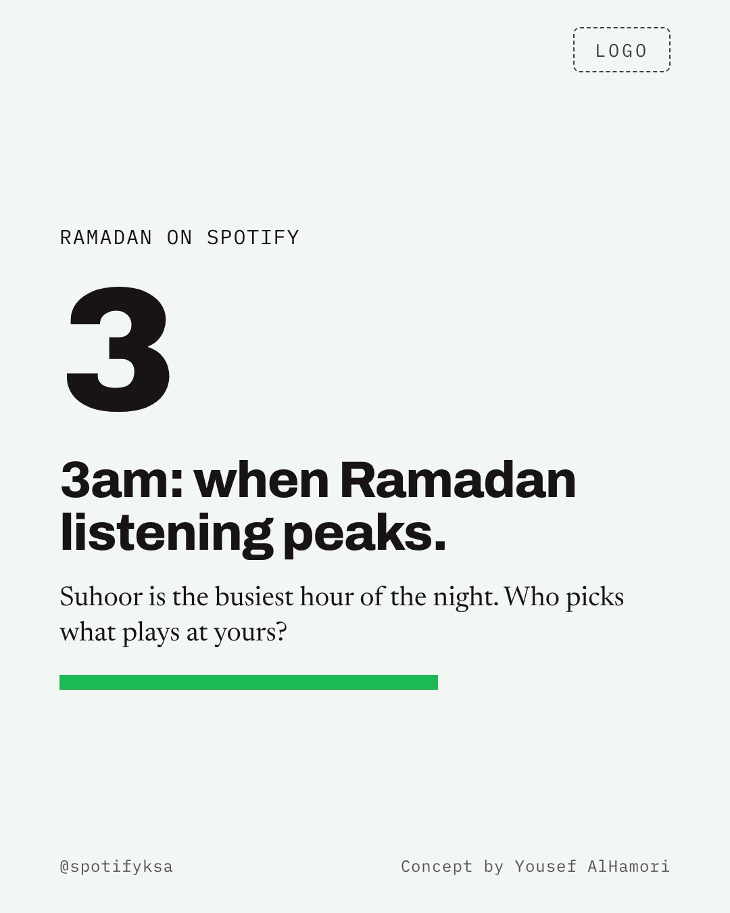
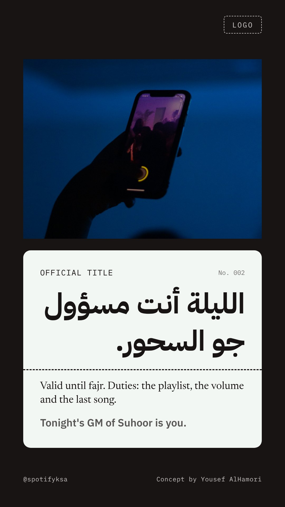
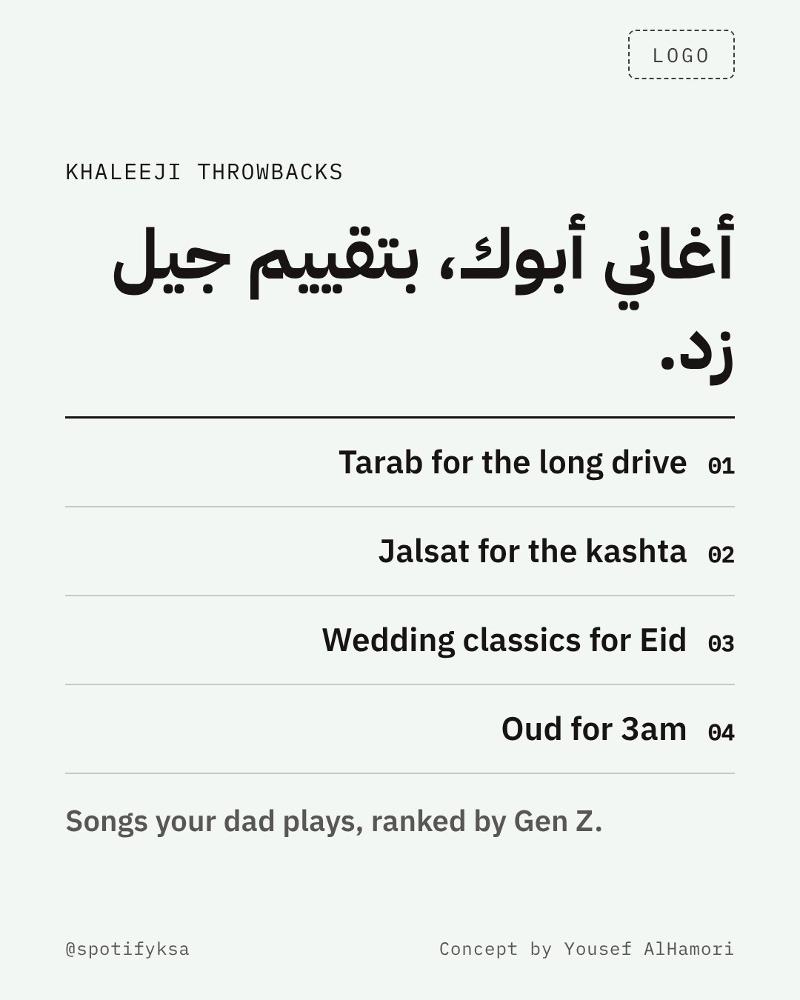

Ramadan listening peaks around 3am, right at suhoor. Tag the person who always ends up with the phone. #GMofSuhoor #SpotifyRamadan #مسؤول_جو_السحور
Ramadan listening pillar: uses real Spotify data to set up the campaign and drive tags.
Ramadan listening peaks at 3am. GM of Suhoor crowns whoever runs the suhoor playlist.
GM of Suhoor carries Spotify's Saudi "Be the GM of Vibes" platform into Ramadan, where listening already peaks around suhoor. Every suhoor gathering has one person in charge of the sound, and the campaign gives that person a title, a shared playlist and a reason to post. It runs in Saudi dialect, short form and creator led, with a Khaleeji throwback series for Gen Z.
Unsolicited concept for portfolio purposes. I am not affiliated with Spotify; its name and trademarks belong to the brand. Facts in the audit come from the public sources listed at the bottom. Targets are proposed, not actual results.
Three posts from the campaign, each with the caption as it would go out and the job it does. The dashed LOGO box marks where the brand's logo would sit. Photos are free stock images from Unsplash, standing in for a real shoot.



What the brand already does well on social, and the openings this plan goes after.
Drive 25,000 follows of the suhoor playlist and 3,000 tagged GM posts during Ramadan 2027 (targets).
Gen Z aged 18 to 28 who stay up through Ramadan nights and pass one phone around to pick what plays at suhoor.
At every suhoor gathering, one person quietly controls the sound and everyone has an opinion about it.
Drive 25,000 follows of the suhoor playlist and 3,000 tagged GM posts during Ramadan 2027 (targets).
Comedy sketches and user generated posts about who runs the playlist at 3am.
Gen Z discovering the Khaleeji classics their parents play, with tarab facts from Spotify data.
Duaa, podcasts and calm playlists for the quiet hours, plus data moments from the Ramadan Hub.
Winter weekend and kashta clips from fans, carrying GM of Vibes into the season.
| Platform | Role | Cadence |
|---|---|---|
| TikTok | Sketches in Saudi dialect, creator duets and the hero reel, posted around midnight to 3am. | 5 per week |
| Story stickers to nominate your GM, Reels and playlist covers on @spotifyksa. | 4 posts and daily stories | |
| Snapchat | Suhoor check ins with a GM of Suhoor badge filter shared between friends. | Daily in Ramadan |
Ramadan 2027, starting in February, when listening peaks at suhoor and friend groups gather late every night.
Spotify's Ramadan Hub data shows listening peaks around 3am at suhoor, and someone at every gathering is in charge of what plays. GM of Suhoor gives that person a title and turns the suhoor playlist into the moment people post.
How it spreadsFriends nominate their GM of Suhoor with an Instagram story sticker and build a shared suhoor playlist together on Spotify. The GM posts a screenshot with #مسؤول_جو_السحور, and the funniest nominations get reposted the next night.
| Time | Visual | Audio / text |
|---|---|---|
| 0 to 3s | 2:55am, a majlis full of friends; the clock on the wall, a tray of suhoor dishes arriving, one phone face up on the carpet. | Ambient chatter. On screen text: 2:55am |
| 3 to 8s | Everyone reaches for the phone at once; one friend grabs it and holds it above his head. | VO (Saudi dialect): كل قعدة لها مسؤول جو. |
| 8 to 13s | Quick cuts: he skips a song and the room groans, he plays a Khaleeji classic and the uncles nod along. | Licensed Khaleeji track plays briefly, no lyrics on screen. Groans and laughter. |
| 13 to 19s | His grandmother points at the phone without a word; he switches straight to the Duaa playlist and the room goes quiet. | Sound drops to a calm recitation. On screen text: Know your room. |
| 19 to 25s | Phone screen shows a shared suhoor playlist with everyone's names; friends nominate him with a story sticker. | VO: وأنت، مين مسؤول جو سحوركم؟ |
| 25 to 30s | Group shot at the suhoor spread, the GM given the last date as a prize. End card with the campaign name in Arabic and English. | On screen: GM of Suhoor. مسؤول جو السحور. |
A two week calendar, the creators I would brief, and how the account answers people in the comments.
| Day | Platform | Format | Pillar | Post |
|---|---|---|---|---|
| W1 Sun | TikTok | Video | GM of Suhoor | Hero reel: Who Has the Phone? |
| W1 Mon | Story | GM of Suhoor | Nominate your GM ticket sticker | |
| W1 Tue | TikTok | Video | Khaleeji throwbacks | Gen Z rates their dad's car playlist |
| W1 Wed | Carousel | Ramadan listening | 3am peak data and the Duaa playlist | |
| W1 Thu | Snapchat | Filter | Kashta weekends | GM badge filter for weekend gatherings |
| W2 Sun | Reel | GM of Suhoor | Best nominations from week one | |
| W2 Mon | TikTok | Duet | GM of Suhoor | Comedy creator reacts to the worst suhoor skips |
| W2 Tue | Reel | Khaleeji throwbacks | Oud player plays a classic, crowd guesses it | |
| W2 Wed | TikTok | Video | Ramadan listening | Gamer's late night playlist before suhoor |
| W2 Thu | Story | Kashta weekends | Repost user generated kashta playlists |
| Tier | Creator type | Why them | The ask |
|---|---|---|---|
| Mid (50k to 250k) | Local comedy sketch creators who write in local dialect | The GM idea lives on relatable humor about friend groups, which is their whole format. | Two sketches about suhoor playlist fights and one nomination duet |
| Micro (10k to 50k) | Gaming streamers who stay live through Ramadan nights | Gamers are a core Spotify audience and are awake at 3am anyway. | Share their late night playlist on stream and post one TikTok |
| Micro (10k to 50k) | Oud players and Khaleeji music cover artists | They connect Gen Z to tarab and give the throwback series a live sound. | One Reel playing a classic, plus a throwback playlist cover |
Proposed targets and the tests that would tell us what to change after week one.
| Metric | Target | Why it matters |
|---|---|---|
| Suhoor playlist follows | Target: 25,000 follows during Ramadan | Turns social attention into listening on the platform. |
| Tagged GM posts | Target: 3,000 posts with #مسؤول_جو_السحور or #GMofSuhoor | Measures how far the nomination mechanic spreads between friend groups. |
| Shares per Reel | Target: shares at 3% of reach | Sketches are made to be sent to the group chat, so shares matter most. |
| Comments on throwback posts | Target: 500 comments per post on average | Shows the Khaleeji series is starting real conversations with Gen Z. |
Each major choice in this plan, matched to published research. Some studies cover the wider region or global audiences; the source says which. Full list on the research page.
Spotify data from the first two weeks of Ramadan showed the majority of Saudi listeners tune in at around 3am, and the Cooking Time playlist grew 743%.
Spotify's own data shows Saudi listening peaks around 3am in Ramadan, so the idea sits on a real moment.
Arab News, Majority of listeners tune in to Spotify during Ramadan's pre dawn hours (Spotify data), 2025TikTok ads reached 38.6 million users aged 18 and above in Saudi Arabia in late 2025, the largest ad audience of any platform in the report (ad reach, not monthly active users).
TikTok has the largest ad reach among Saudi adults, which helps a sketch about suhoor travel between friend groups.
DataReportal, Digital 2026: Saudi Arabia, 202571% of young Arabs aged 18 to 25 in ten countries including Saudi Arabia prefer media in Arabic, and 67% find available Arabic content outdated next to English equivalents.
Young Arabs prefer Arabic media but find much of it dated, so fresh Khaleeji content in dialect fills a gap.
The National, reporting the Congress ACI Arab Youth Pulse Survey 2025 by Ipsos and the Abu Dhabi Arabic Language Centre, 202640% of consumers say brands joining trends is embarrassing, and consumers rank originality of content second only to product quality in what makes a brand stand out on social.
Many consumers find brand trend chasing embarrassing and rate originality highly, so Spotify owns its own Ramadan format.
Sprout Social, The 2025 Sprout Social Index: What consumers want on social, 2025Do friend groups build and share more suhoor playlists when nudged by a nomination sketch posted late at night than by one posted earlier in the evening?
2 week posting time test on TikTok and Instagram during Ramadan: GM of Suhoor sketches at 11pm versus 2:30am
10 sketches (5 per slot), tracked playlist follows and #مسؤول_جو_السحور posts
The late slot earns at least 30% more first hour views and 20% more shared playlist follows